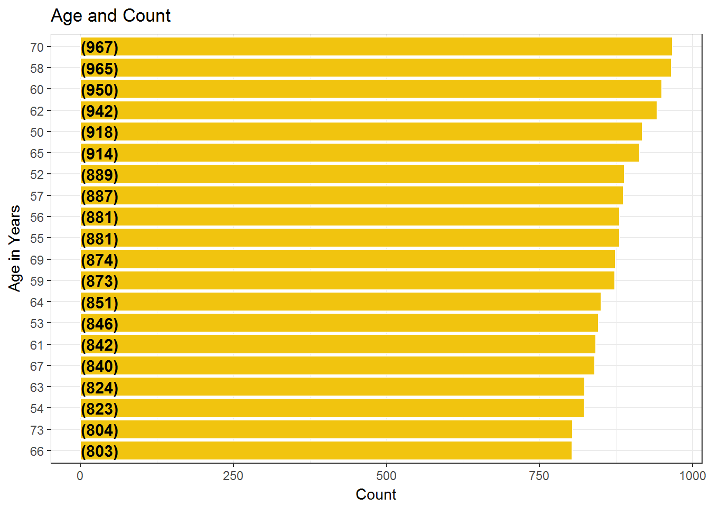

Chapter 22 Ages Commonly Affected
We examine the Top Most Common Ages associated with the Adverse Events and plot them in the bar plot.
TransformIntoYears = function(ds)
{
if(!is.na(ds["AgeAtAdverseEvent"]))
{
x = as.numeric(ds["AgeAtAdverseEvent"])
ds["AgeAtAdverseEvent"] = as.numeric(ds["AgeAtAdverseEvent"])
if(ds["AgeUnit"] == "Month(s)")
{
ds["AgeAtAdverseEventInYears"] = x/12
}
else if (ds["AgeUnit"] == "Weeks(s)")
{
ds["AgeAtAdverseEventInYears"] = x*7/365
}
else if (ds["AgeUnit"] == "Day(s)")
{
ds["AgeAtAdverseEventInYears"] = x*1/365
}
else if (ds["AgeUnit"] == "Decade(s)")
{
ds["AgeAtAdverseEventInYears"] = x*10
}
}
return(ds)
}
AdverseFoodEvents = AdverseFoodEvents %>%
mutate(AgeAtAdverseEventInYears = AgeAtAdverseEvent)
AdverseFoodEvents$AgeAtAdverseEventInYears =
as.numeric(AdverseFoodEvents$AgeAtAdverseEventInYears)
AdverseFoodEvents = sapply(AdverseFoodEvents,TransformIntoYears)
AdverseFoodEvents = as.data.frame(AdverseFoodEvents)
AdverseFoodEvents %>%
filter(!is.na(AgeAtAdverseEventInYears)) %>%
group_by(AgeAtAdverseEventInYears) %>%
summarise(Count = n()) %>%
arrange(desc(Count)) %>%
ungroup() %>%
mutate(AgeAtAdverseEventInYears = reorder(AgeAtAdverseEventInYears,Count)) %>%
head(20) %>%
ggplot(aes(x = AgeAtAdverseEventInYears,y = Count)) +
geom_bar(stat='identity',colour="white", fill = fillColor2) +
geom_text(aes(x = AgeAtAdverseEventInYears, y = 1, label = paste0("(",Count,")",sep="")),
hjust=0, vjust=.5, size = 4, colour = 'black',
fontface = 'bold') +
labs(x = 'Age in Years',
y = 'Count',
title = 'Age and Count') +
coord_flip() +
theme_bw()